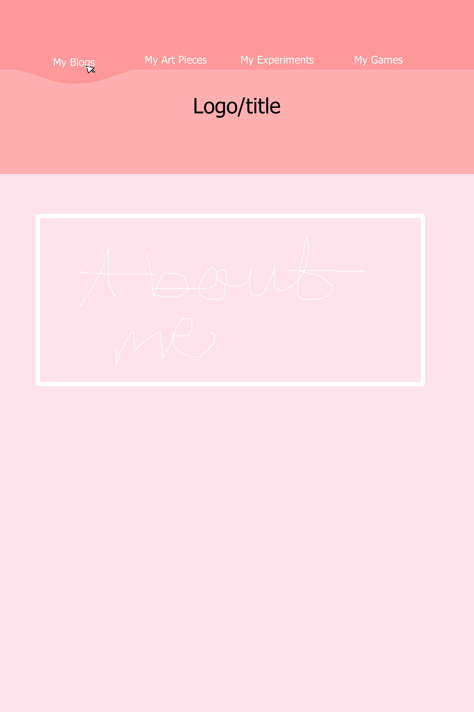
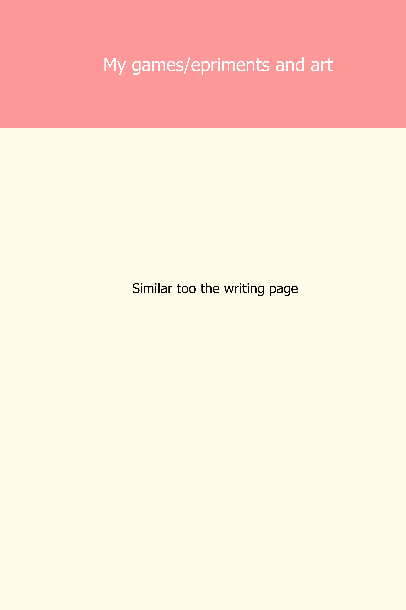
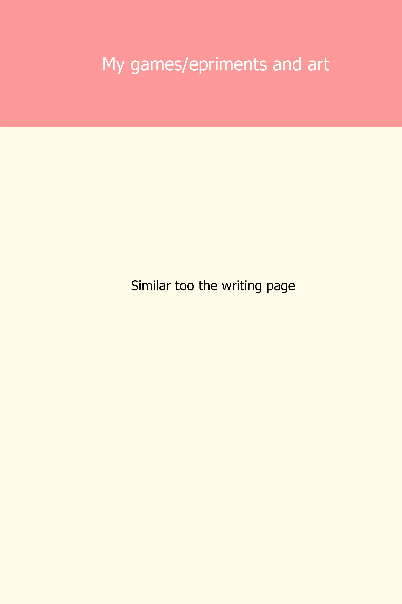
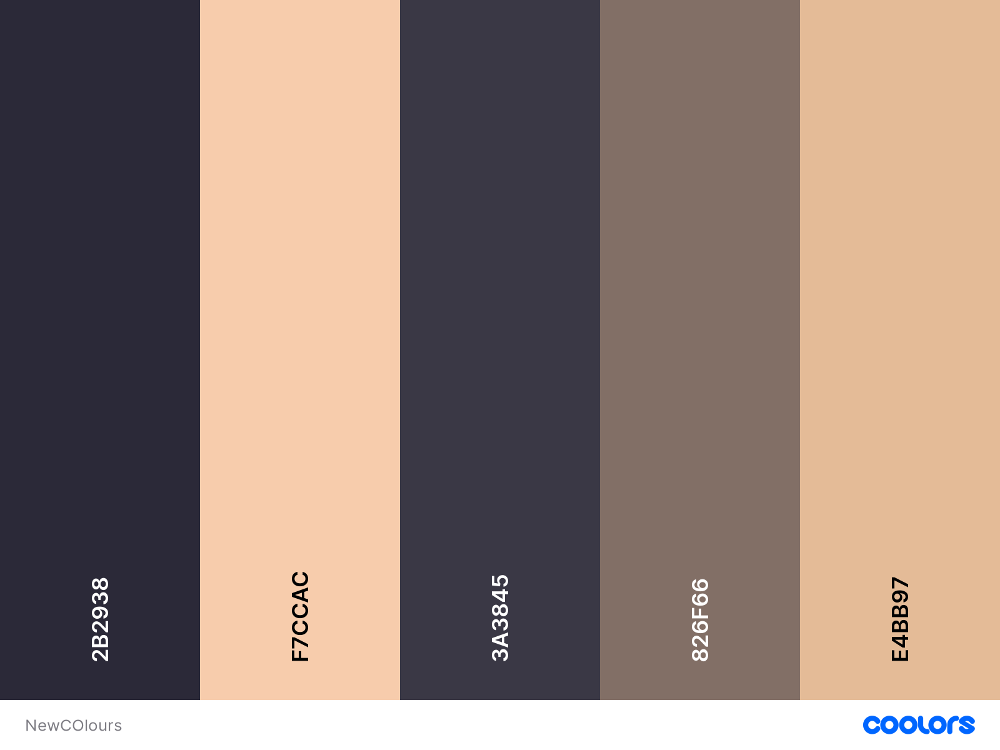

Initially, my website looked like this:
 

Everything was based on these two colour pallets:


I changed the colour pallet to something darker while still using pink because I refuse to fall into the stereotype of pink being unprofessional simply because it is considered a feminine colour. I went with a darker pallet with purple, pink, and various browns.
The reason that the wireframe has changed is that I was ambitious with my previous wireframe and have decided to be simpler, for now, with transitions on the site. The blog page now has a decorated button for the ‘back to top’ feature and can now be found between each blog post, simply because the writings are so long, and it makes navigation easier and breaks up the walls of text. The text Is also broken up by the page background being different from the blog post backgrounds.
The new colour pallet is this, apart from font colours being black or white:
Home Page
The home page was changed to have the navigation in a line underneath the heading and expand as you hover to show that you are on the correct tab. There are also directions on what to do throughout the page, “click the circle!” is used to show users the ‘about me section. Further down the page, there is a jumping text showing users where to contact me. The contact information was moved towards the centre and now contains a comment section. The top of the home page has a type writer effect that doesnt fit as pefectly as I wanted however it workds well enough by changing the speed of the typing.
Blog page
The blog page has stayed the same in terms of navigation and layout, there were more tabs added for the newer blogs. The colour pallets were changed to purple, pink, and brown tones. I also changed the background to make the page easier on the eyes as it made it difficult for me to read and the font size was changed for this reason as well.
My Games page
This page was removed because I wasn’t able to have content for it ready in time because of technical issues.